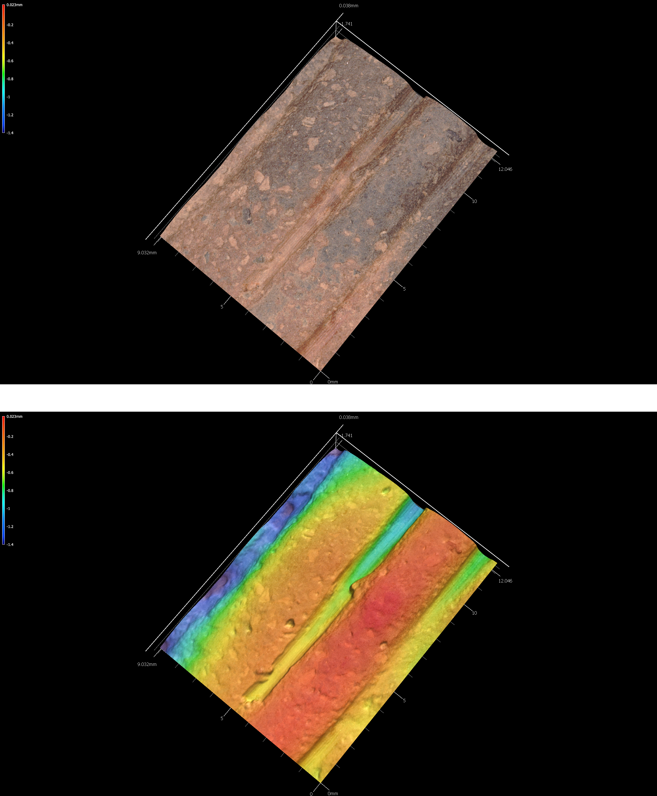
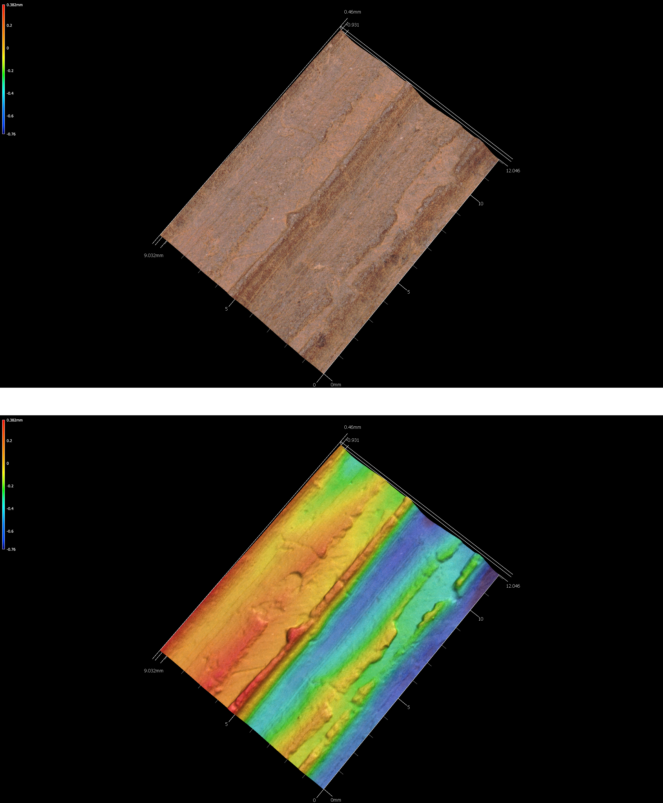
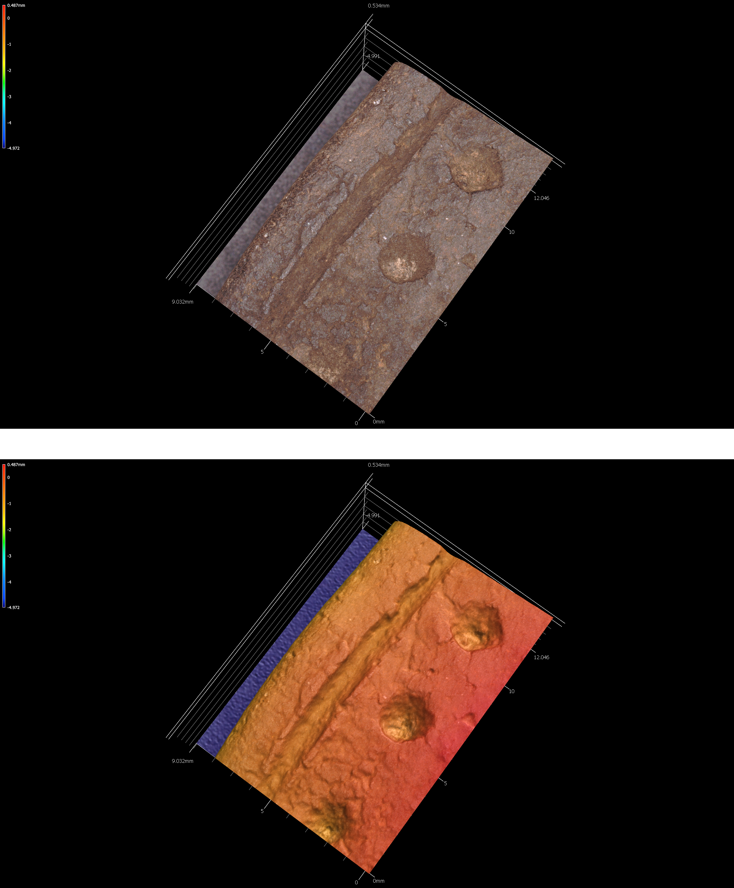
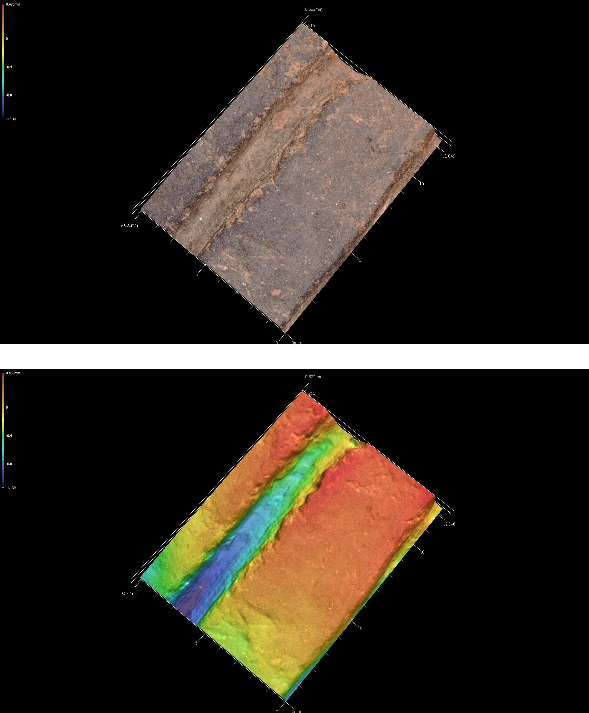
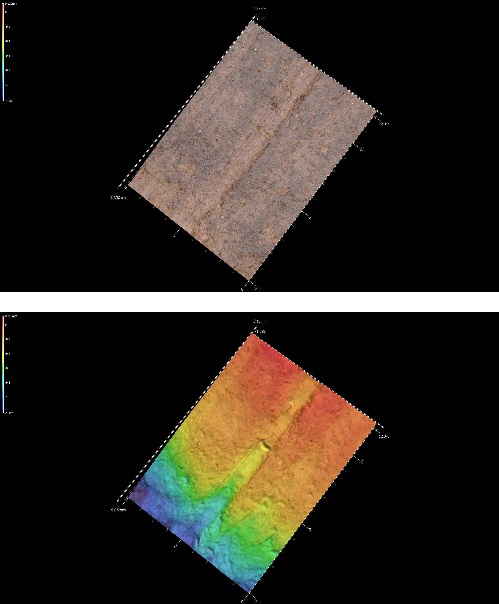
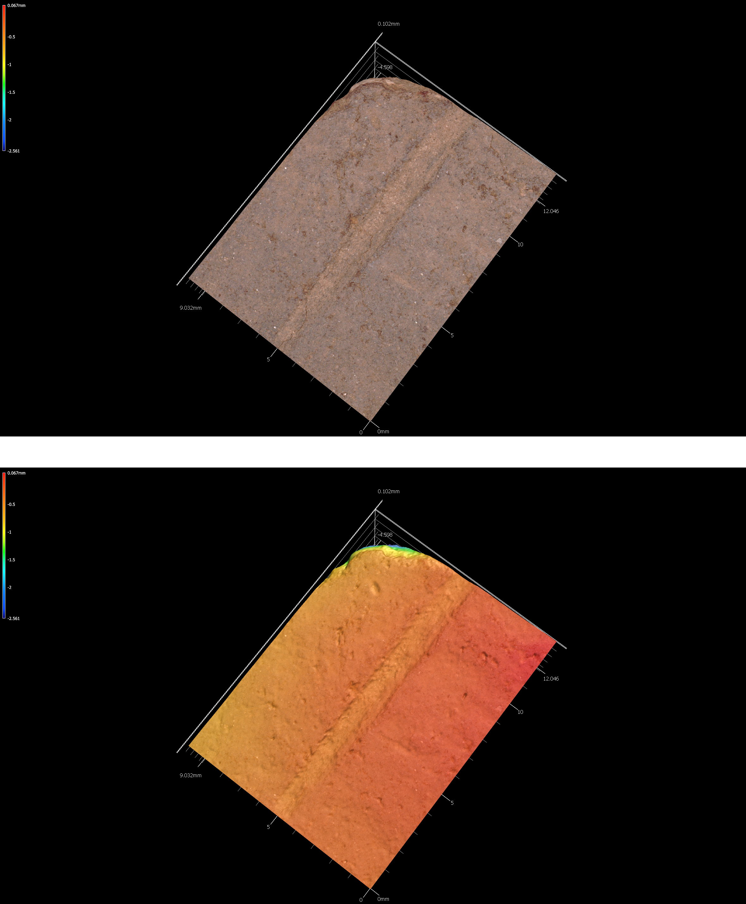
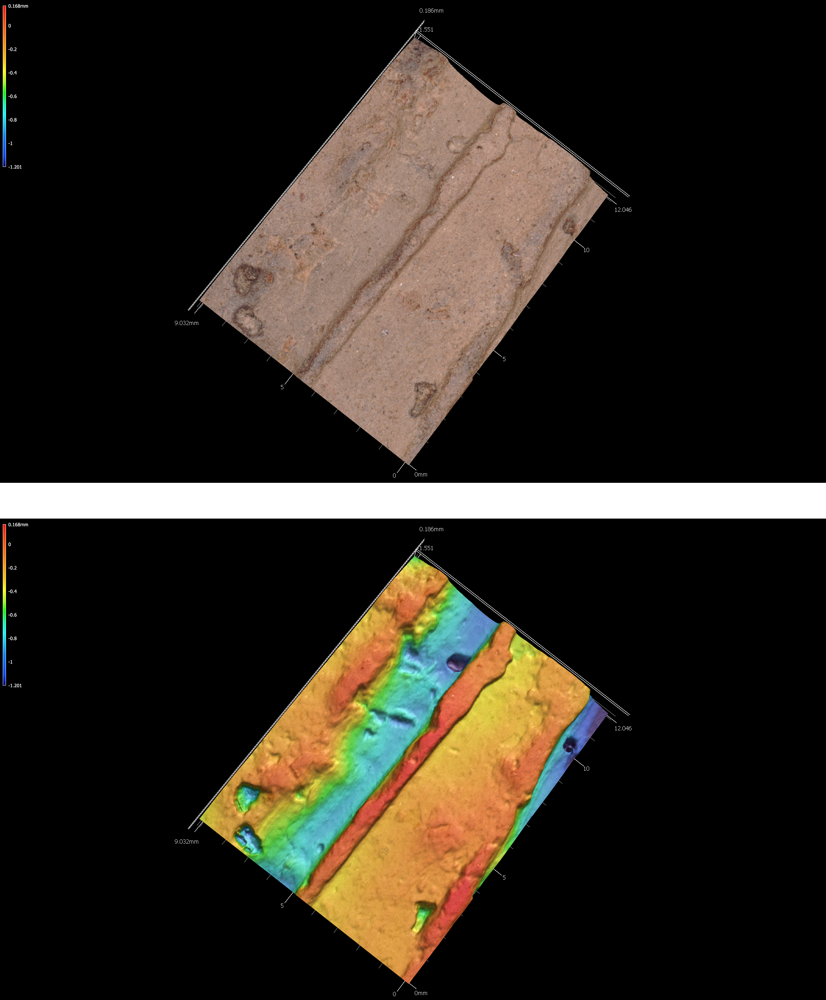

Chapter 4 Archaeological sample
4.1 41SA66
The David Fox site is located in the Angelina National Forest on a high terrace overlooking the Attoyac Bayou floodplain and a small tributary. The site was described by Stephenson (1948) as being ``small and culturally poor,’’ and was under cultivation at that time (Fields 1978).
There are Woodland period and pre-CE 1200 Caddo components at 41SA66. The Woodland component includes eight Goose Creek Plain body sherds from surface contexts (Suhm, Krieger, and Jelks 1954, 57, Pl. 29). The Caddo component is evidenced by 11 grog-tempered rim and body sherds. Three of the rims bear multiple (5-12 lines) horizontal incised lines, and three body sherds include 7-12 parallel incised lines. The other five sherds—four body sherds and a body/base sherd—are plain.
4.1.1 41sa66

4.1.2 41sa66-4

4.1.3 41sa66-5

4.2 41SB125
Located in the Sabine National Forest, 41SB125 includes both Woodland and post-CE 1200 Caddo components. Diagnostic artifacts from the Woodland period component include 42 Goose Creek Plain body sherds from eight shovel tests; these were recovered between 20-60 cmbs. There is another sandy paste sherd with incised and stamped decorative elements, potentially a Marksville Stamped body sherd (Ford and Willey 1940, 65–74).
The Caddo component is marked by seven grog-tempered body sherds from four shovel tests, ranging from 20-75 cmbs. Three are plain grog-tempered body sherds. The decorated sherds include a body sherd with a single straight incised line (ST 20, 20-30 cmbs), another body sherd with parallel brushing marks (ST 11, 20-30 cmbs), a rim with a triangular incised zone filled with rows of cane punctates, and a body sherd with an incised zone filled with diagonal incised lines.
4.2.1 41sb125-2-st27-25cm-lot100

4.2.2 41sb125-3-st27-lot99-inc

4.2.3 41sb125-11-st11-lot50-inc

4.3 41SB189
There are several archeological components at 41SB189 in the Sabine National Forest. The earliest may date to the Middle Archaic period, based on the recovery of a possible Johnson dart point from Mound D that was manufactured from non-local white chert. Late Archaic use of the site is marked by a Williams dart point from Mound D that was manufactured from silicified wood.
The Woodland component at 41SB189 is more substantial, includes a chert Gary point from Mound A, three Friley arrow points (chert), and 15 Goose Creek Plain body sherds. These were found in shovel tests, and range between 0-50 cmbs in Mounds A and H.
Temporally diagnostic artifacts indicate that the Caddo occupation at the site occurred during the Early Caddo period (CE 1000-1200). That assertion is based on the recovery of an Alba point from Mound A made of chert. The final Caddo occupation occurred after CE 1400, and includes a Bassett arrow point from Mound D made from chert, as well as grog-tempered body sherds from Mound A and D recovered between 0-60 cmbs in different shovel tests. Sherds recovered from that component include seven plain body sherds, and five decorated body sherds. One decorated sherd from Mound A includes parallel brushing marks, two others from Mound D exhibit parallel incised lines, and another bears a single engraved line. The last decorated body sherd comes from what may have been a carinated bowl found in looter backfill that was excavated from Mound D, which has diagonal opposed engraved lines.
4.3.1 41sb189-9-lot17

4.4 41SB291
Woodland and post-CE 1200 ancestral Caddo components at 41SB291 in the Sabine National Forest. The Woodland material culture remains include seven Goose Creek Plain, body sherds from four different shovel tests (20-60 cm bs) as well as three dart points and a petrified wood biface preform. The dart points include Gary and Kent points made from petrified wood and a black chert dart point blade and tip fragment.
Other chipped stone tools include a petrified wood early stage biface (ST 9, 20-30 cmbs) and a petrified wood biface tip (ST 12, 60-70 cmbs). There are also five unilateral flake tools in the assemblage of petrified wood, quartzite, a non-local black chert, and local reddish-brown chert from ST 16, 18, 21, 51, and 52 (0-60 cmbs).
The ancestral Caddo component is marked by four grog and/or bone-tempered rim and body sherds. One rim from ST 61 (50-55 cmbs) has vertical brushing marks (indicative of a post-CE 1200 Caddo vessel in this part of East Texas), and a body sherd from ST 64 (30-40 cm bs) has parallel incised lines. The other two sherds are plain, including a body sherd from ST 51 (20-30 cmbs) and a rim sherd from ST 26 (30-40 cmbs). The rim is direct with a rounded lip.
4.4.1 41sb291-4-st64-3040-lot245

4.4.2 41sb291-9-st61-50-55-lot229

References
Fields, R. C. 1978. “Report on the 1977 Investigations at the George C. Davis Site, Caddoan Mounds State Historic Site, Cherokee County, Texas.” Texas Archeological Research Laboratory, University of Texas at Austin.
Ford, J. A., and G. R. Willey. 1940. “Crooks Site, A Marksville Period Burial Mound in La Salle Parish, Louisiana. Department of Conservation, Louisiana Geological Survey, Anthropological Study, No. 3.” Department of Conservation, Louisiana Geological Survey, Anthropological Study, No. 3.
Stephenson, Robert L. 1948. “Archeological Survey of McGee Bend Reservoir: A Preliminary Report.” Bulletin of the Texas Archeological and Paleontological Society 19: 57–73.
Suhm, Dee Ann, Alex D. Krieger, and Edward B. Jelks. 1954. “An Introductory Handbook of Texas Archeology.” Bulletin of the Texas Archeological Society 25: 1–562.